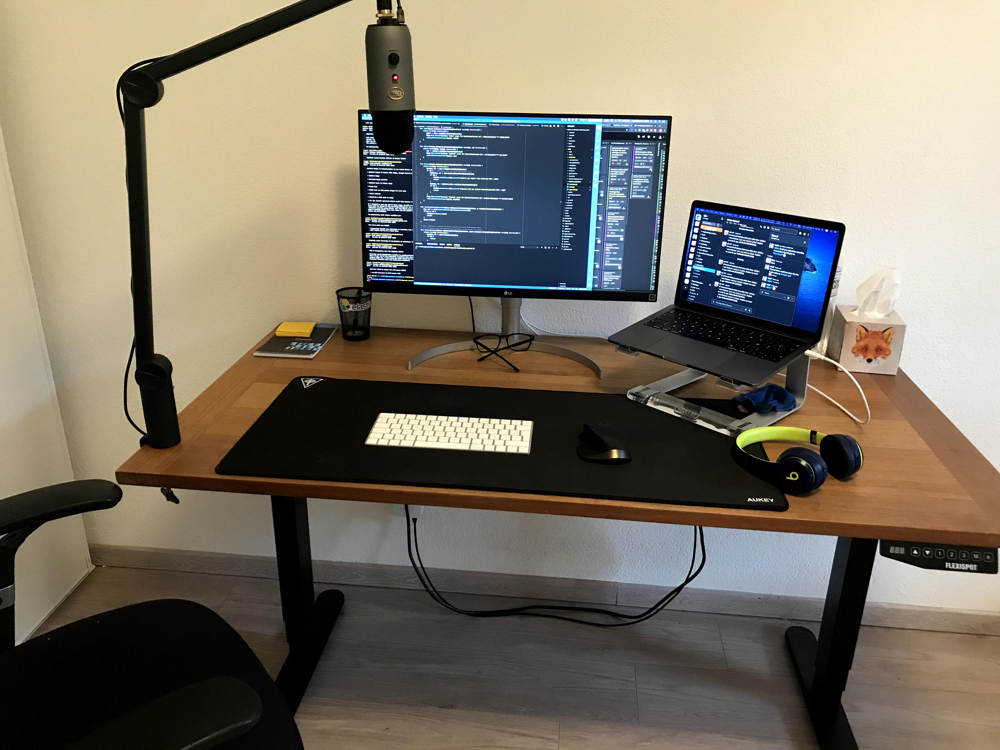
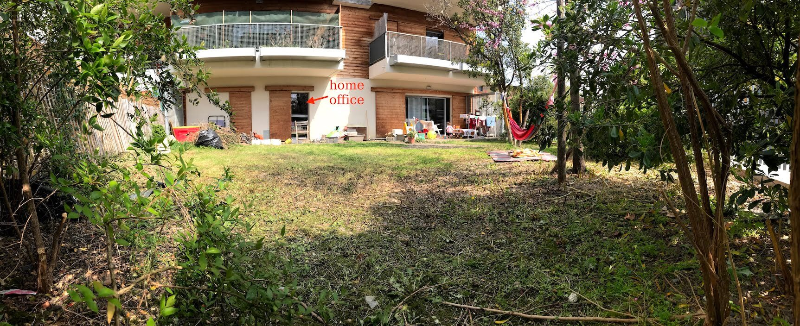

My home office setup in 2020
Here is my current setup:

- Blue Yeti USB microphone
Why a standalone mic just for Zoom? One very important aspect of the remote-only work setup is the importance of being properly understood. I take this very seriously and think that the sound quality of the mic I use every day influences how effective my meetings are. I also make a number of calls to potential candidates, which means I should sound perfect.
- Yeti Compass boom arm
Note that the boom arm is meant to carry the shock mount + the mic and since I only mounted the Yeti mic, the spring mechanism is a bit too tight which means the arm tends to go up. I unscrewed the screw in the base of the boom arm at its minimum but the tension is still too high and the boom arm tends to go up.
- Some random chair (I wish I could afford the Herman Miller Aeron)
- Apple Magic Keyboard. I also use a Sharkoon PureWriter TKL from time to time when I want to bother my collegues with the clank-clank sound of the red switches
- Logitech MX Master Just an excellent mouse
- LG 27UL850-W 27 inches 4K monitor
- Griffin Elevator stand
- AUKEY mousepad XXL
- USB-C hub Ugreen and AUKEY USB3 hub
- The Flexispot standing desk E5B (B = black) with a €25 wood board I mounted on top.
- (old 2019 setup) Logitech K760 (wireless solar keyboard)
- (old 2019 setup) Logitech M90 mouse (cheap €6 mouse)
And finally, here is a picture from the backyard. 🙂
